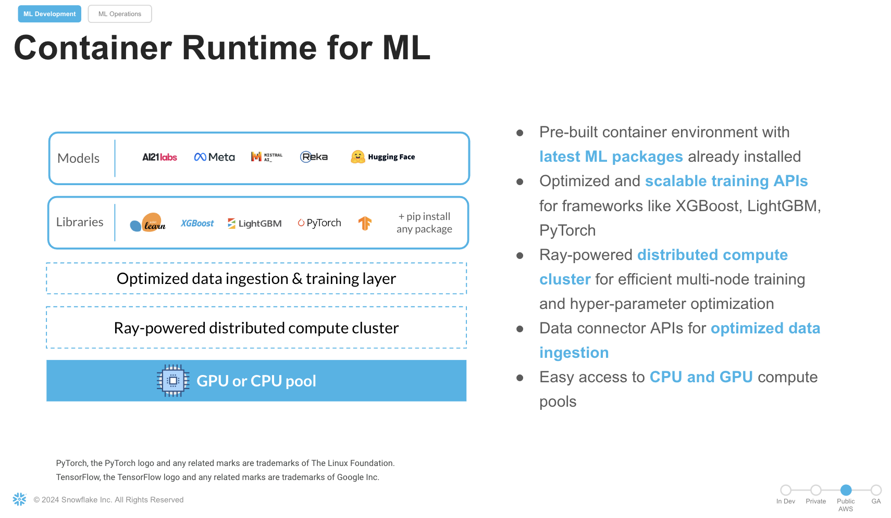

In today's fast-paced manufacturing landscape, ensuring product quality early in the production process is crucial for minimizing defects and optimizing resources. With advancements in machine learning, manufacturers can now leverage computer vision models to automate defect detection, improving efficiency and accuracy.
In this Quickstart guide, we will train a computer vision model for multiclass defect detection using Snowflake Notebooks on Container Runtime easily and efficiently. The dataset comprises labeled Printed Circuit Boards (PCBs) with annotations including defect labels and bounding boxes for each image. This approach aims to help manufacturers implement early Quality Control, reducing costs, time, and resource usage in production processes.
The process includes the following steps:
- Preprocessing the dataset, which involves using the annotated data with labels and bounding boxes information for each image.
- Convert the image to a base64 bytes and store the contents in Snowflake table
- Training a PyTorch RCNN Object Detection model with distributed processing on multi-GPUs.
- Registering the trained model in the Snowflake Model Registry.
- Running detections and visualizing recommendations in a Streamlit app.
- Displaying inference results for any selected PCB image within the Streamlit app.
What is Snowflake ML?
Snowflake ML is the integrated set of capabilities for end-to-end machine learning in a single platform on top of your governed data. Data scientists and ML engineers can easily and securely develop and productionize scalable features and models without any data movement, silos or governance tradeoffs.
What is Snowflake Notebooks on Container Runtime?
Snowflake Notebooks are natively built into Snowsight, and provide everything you need for interactive development, cell by cell execution of Python, Markdown and SQL code. By using Snowflake Notebooks one can increase the productivity since it simplifies connecting to the data and using popular OSS libraries for ML usecases. Notebooks on Container Runtime offer a robust environment with a comprehensive repository of pre-installed CPU and GPU machine learning packages and frameworks, significantly reducing the need for package management and dependency troubleshooting. This allows you to quickly get started with your preferred frameworks and even import models from external sources. Additionally, you can use pip to install any custom package as needed. The runtime also features an optimized data ingestion layer and provides a set of powerful APIs for training and hyperparameter tuning. These APIs extend popular ML packages, enabling you to train models efficiently within Snowflake. At the core of this solution is a Ray-powered distributed compute cluster, giving you seamless access to both CPU and GPU resources. This ensures high performance and optimal infrastructure usage without the need for complex setup or configuration, allowing you to focus solely on your machine learning workloads.
Key Features:
- Managed Environment: Focus on your ML projects without the overhead of managing underlying infrastructure.
- Scalability: Leverage distributed computing resources to efficiently handle large datasets and complex computations.
- Integration: Seamlessly combine with Snowflake's ML operations for a cohesive workflow.
- Flexibility: While common ML packages come pre-installed, you have the option to install custom packages as needed.

Prerequisites
What You'll Learn
- How to leverage Snowflake Notebooks on Container Runtime(GPUs) to carry model training using a Computer Vision Object Detection model.
- How to use the ShardedDataConnector that defines the training process for an individual worker during the training process.
- How to achieve independent execution on each worker during the distributed training.
- How to use the PyTorchDistributor to distribute and manage the execution of the training function across multiple workers.
- How to log a trained model to Snowflake Model Registry
- How to create a streamlit application to carry ongoing inference on new images.
What You'll Build
- A Object Detection Model from PyTorch that was trained with distributed processing on GPUS in Snowflake Notebooks to carry multiclass defect detection.
- A Streamlit app that will fetch the predictions and plot the bounding boxes around the defects with the class and prediction score.
This section will walk you through creating various objects. The repository with the source code can be found here. Access the gitrepo here and clone it to your local directory. The dataset can be accessed from this link. Review the licensing requirement before using the dataset.
Initial Setup
We will work with two notebooks. The first one, 0_data_preparation_run_in_local_IDE.ipynb, handles the creation of necessary Snowflake objects, compute instances, and data loading from a third-party dataset. Be sure to comply with the dataset's licensing terms and usage guidelines.
Notebook Execution: 0_data_preparation_run_in_local_IDE.ipynb
To execute the notebook, follow these steps using an IDE like Jupyter or Visual Studio Code:
- Snowflake Object Creation:
- Create the required database, schema, stage, warehouse, compute pool, and external access integration in Snowflake.
- Data Preparation:
- Extract images iteratively from subfolders, ensuring that the corresponding label files containing bounding box coordinates (xmin, ymin, xmax, ymax) and defect classifications are also retrieved.
- File Upload:
- Upload all image files and label files to the designated Snowflake stage for storage and processing.
- Label Management:
- Store the label data (defect classification and bounding box coordinates) in a dedicated table named LABELS_TRAIN for efficient management and access.
- Image Data Processing:
- Read image files and encode their content in Base64 format.
- Combine the encoded image data with metadata such as filenames and corresponding labels.
- Store the resulting data in a Snowflake table, with each record containing the Base64-encoded image, filename, and associated metadata.
Once the setup is complete, proceed to the next step to begin distributed model training.
It is time to set up a distributed training pipeline for training a PyTorch-based Faster R-CNN (Region-based Convolutional Neural Network) model for multiclass defect detection. The training is performed on a dataset of images (specifically, PCBs) with annotations for bounding boxes and labels, using Snowflake's Container Runtime, and utilizes GPUs for accelerated training.
Import the notebook available here
In Snowsight -> Navigate to Project > Notebooks from the left menu bar. Import the .ipynb file you have downloaded into your Snowflake Notebook by using the Import from .ipynb button located on the top right of the Notebooks page. Choose the database, schema, Compute pool and the warehouse that was created earlier.
Let's break down step by step what the training code performs:
Step 3.1 Distributed Setup
We will explore specific syntax in the distributed trainer that coordinates the training across multiple GPUs.
- context = get_context() & rank = context.get_rank(): The get_context() function from Snowflake's framework provides the worker's rank (ID in the distributed system).
- dist.init_process_group(backend="nccl"): Initializes the process group for distributed training. NCCL is a backend optimized for multi-GPU training.
- torch.cuda.device(rank): Ensures the model runs on the specific GPU based on the rank of the process.
Step 3.2 Custom Dataset: FCBData
- IterableDataset: This class wraps the source dataset (PCB images with annotations) to make it iterable for training.
- Image Loading: The contents from IMAGE_DATA is decoded from Base64, loaded as a PIL image, and then transformed into a tensor.
- Bounding Boxes and Labels: Extracts bounding box coordinates (XMIN, YMIN, XMAX, YMAX) and defect class labels from the dataset.Prepares a target dictionary containing the bounding boxes, labels, image IDs, and other metadata required by the Faster R-CNN model.
Step 3.3 Model Setup
- Loading Pre-trained Model:
- weights = FasterRCNN_ResNet50_FPN_Weights.DEFAULT: Loads the pre-trained Faster R-CNN model with ResNet50 as the backbone.
- num_classes = 6: Sets the number of classes (including background) for defect detection.
- FastRCNNPredictor: Modifies the model's prediction head to match the custom number of classes.
- The model is moved to the appropriate GPU (model.to(rank)) and wrapped in Distributed Data Parallel (DDP).
Step 3.4 Model Training Setup
- optimizer and lr_scheduler: Adam optimizer is used to update model parameters. The learning rate is reduced every 3 epochs (StepLR).
- DataLoader: Handles loading the dataset into batches. collate_fn groups the data into batches because the Faster RCNN model requires a custom way to handle images and targets together. Pinning memory to GPU: By specifying pin_memory=True, the data loading process is optimized for GPU usage.
Step 3.5 Training Loop
- For each epoch:
- The model switches to training mode (model.train()).
- The images and targets are moved to the corresponding GPU for training.
- The loss is computed by the model on each batch of images. The optimizer updates the model weights based on the computed loss and the learning rate is updated after each epoch via the scheduler.
Step 3.6 Save model dict and Logging the model to Snowflake Registry
- torch.save(model.module.state_dict(), model_file): Saves the trained model (only on the master node, rank 0) to a temporary file /tmp/models/detectionmodel.pt
- Using a custom model wrapper class DefectDetectionModel(), we use the trained model to be register in Snowflake registry with a model name, version, and the other parameters.
Follow these steps to build a Streamlit application in Snowsight.
- Step 1. Click on Streamlit on the left navigation menu
- Step 2. Click on + Streamlit App on the top right
- Step 3. Enter App title
- Step 4. Select App location (pcb_dataset and Public Schema) and a warehouse
- Step 5. Click on Create. Replace the code with the streamlit code in the file
Also upload the remaining files from this folder to the Streamlit stage by navigating to:
- Snowsight->Data
- Database->PCB_Dataset
- Schemas->Public
- Stages-> streamlitstage
Come back to the Streamlitapp and click Run. Choose an image and click the button to carry Defect Detection .
Congratulations! You have successfully performed distributed model training in Snowflake Notebooks on Container Runtime. By following these steps, you have trained a PyTorch Object Detection model with Snowflake, carry unstructured data(images) processing, train a PyTorch RCNN Object Detection model , log it in Snowflake Model Registry, and use Streamlit to visualize the inference results. To cleanup resources and remove all of the objects and compute pools that you created during this QuickStart. This will ensure that you don't incur any unnecessary costs specifically associated with this QuickStart guide.
What You Learned
- Leverage Snowflake Notebooks on Container Runtime with seamless access to GPUs to carry model training using a Computer Vision Object Detection model.
- Leverage ShardedDataConnector that defines the training process for an individual worker during the training process.
- Carry independent execution on each worker during the distributed training.
- Use the PyTorchDistributor to distribute and manage the execution of the training function across multiple workers.
- Log a trained model to Snowflake Model Registry
- Create a streamlit application to carry ongoing inference on new images.
Ready for more? After you complete this quickstart, you can try one of the following more advanced quickstarts:
Related Resources
Attribution
PyTorch, the PyTorch logo and any related marks are trademarks of The Linux Foundation.